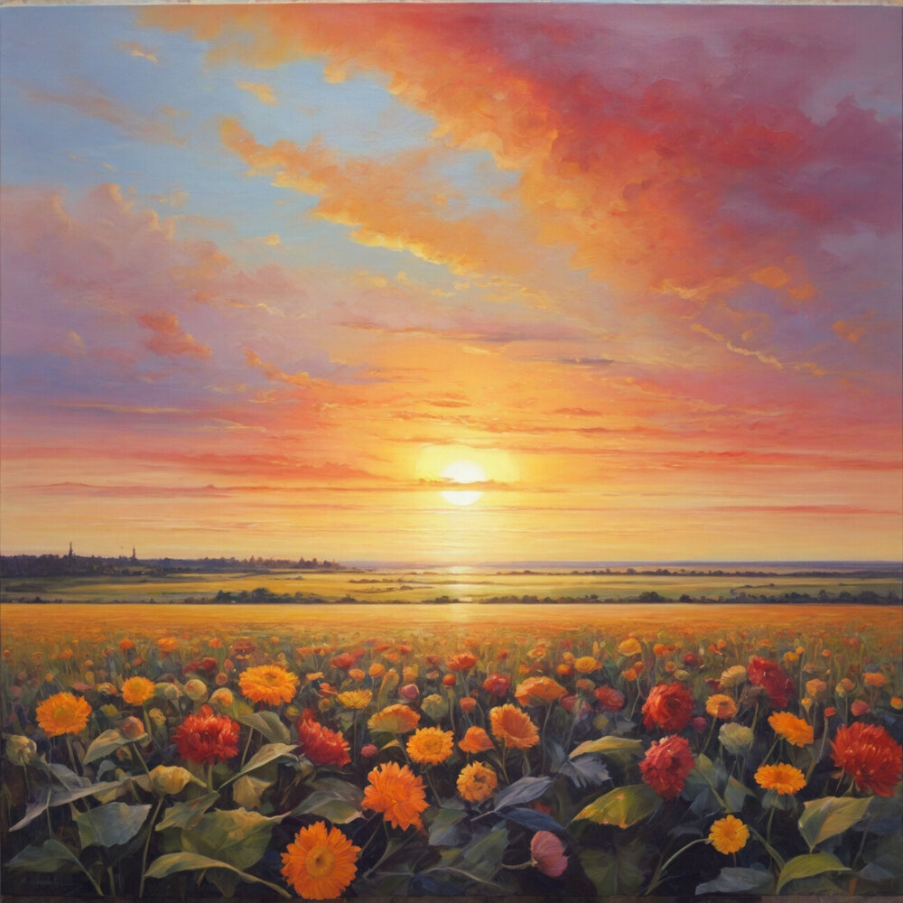
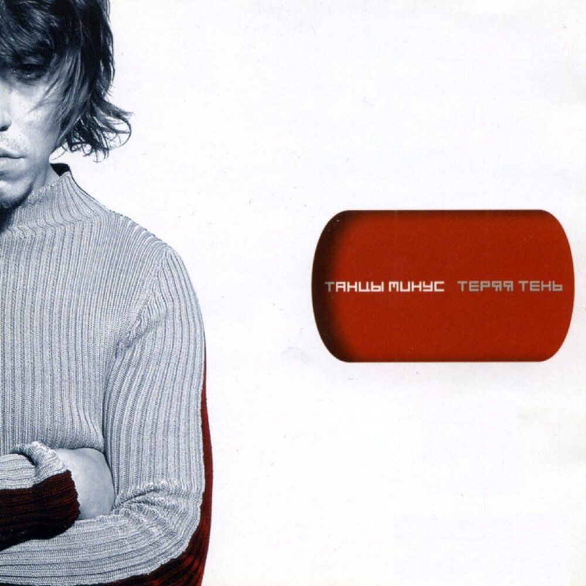
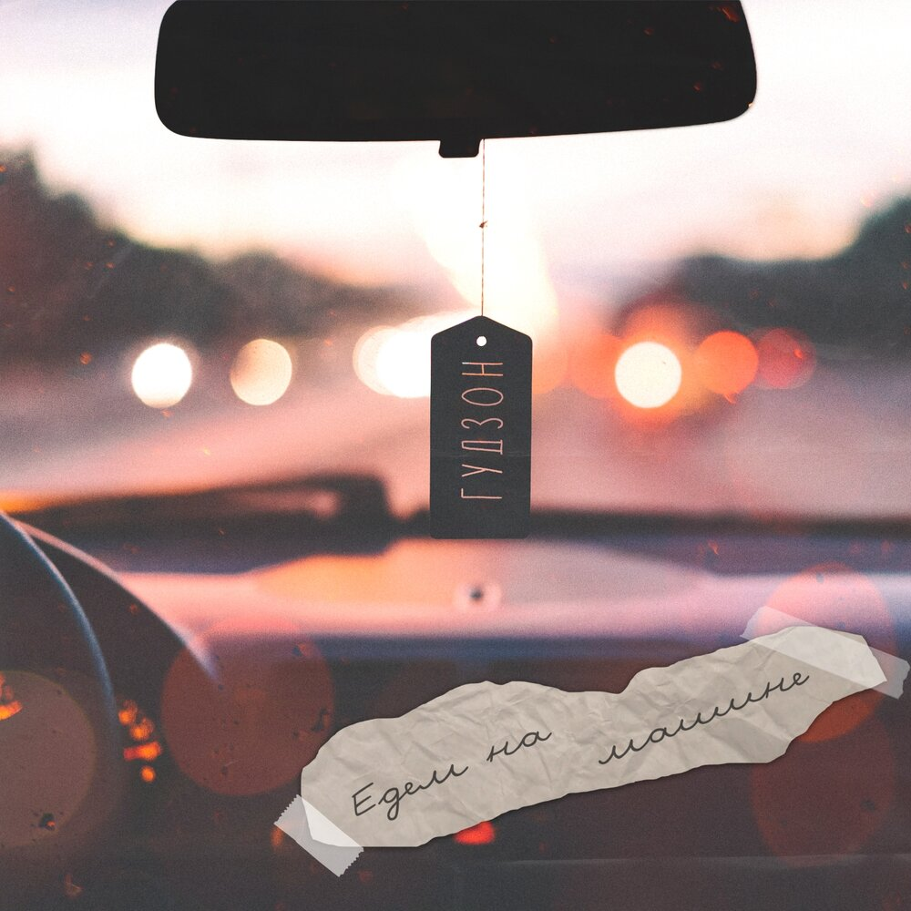
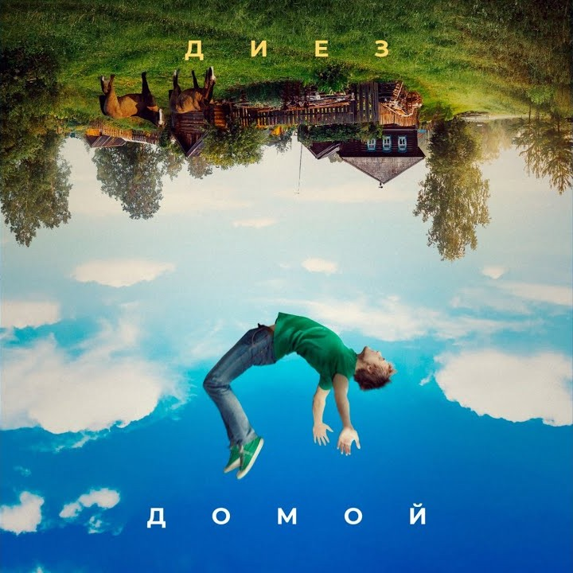
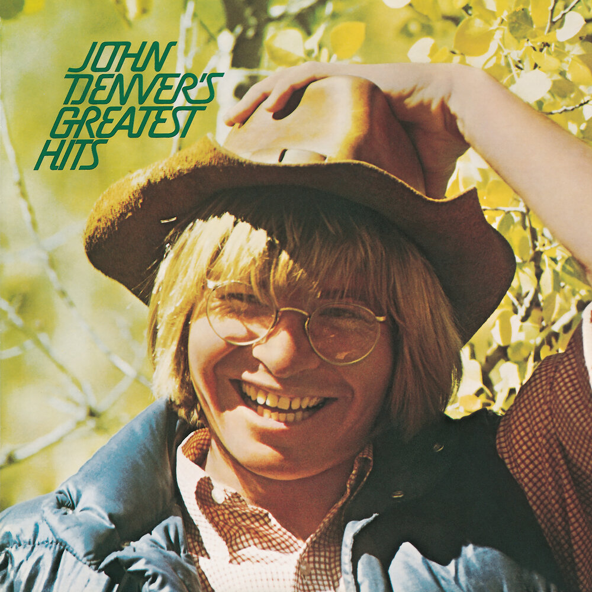
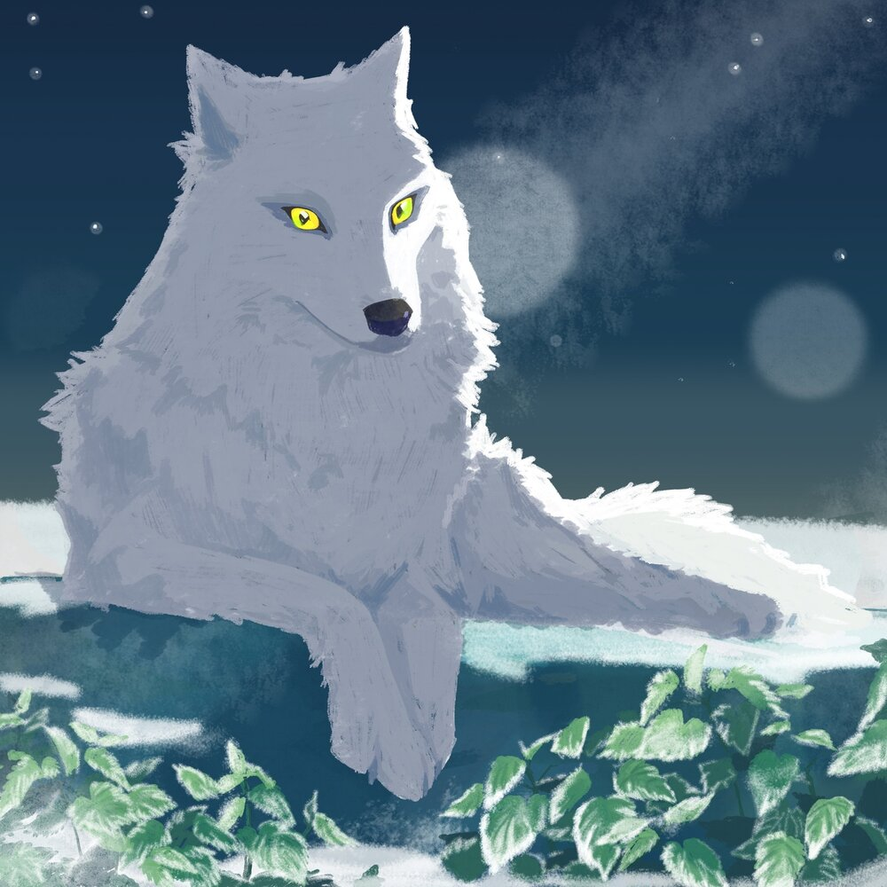
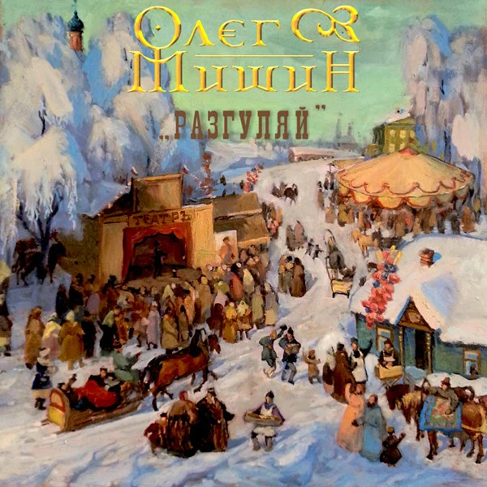

Информация о приложении Nexus Музыка 🎵
В Nexus Музыка мы используем музыку, которая есть на Яндекс музыке, а так-же от исполнителя scara-kru$her, это наш исполнитель.
Мы не зарабатываем деньги за счёт музыки добавленной в приложение. Приложение создано исключительно для удобства пользователя!
Наше приложение использует API сервисов Яндекс, поэтому данное приложение доступно только для стран у которых есть Яндекс (Yandex)
В приложении есть возможность поиска треков, но только тех, которые были добавлены! Вы можете спокойно добавить любую песню в любимые в нашем приложении или на Яндекс музыке.
Перейти на сайт Яндекс Музыки вы можете по кнопке ниже.
Если хотите с нами сотрудничать, напишите нам на почту: senyaentertainment@yandex.ru📩
Остались вопросы? Обратитесь в поддержку по кнопке на главном экране приложения!
©️ Разработчик: senyagame (ссылка на GitHub)😺Подборка музыки
На заре (cover)
Длительность: 3:28
Исполнитель: Nadeya

Nexus музыка
Ровный бег моей судьбы
Ночь, печаль и блеск души
Лунный свет и майский дождь
В небесах
Долгий век моей звезды
Сонный блеск земной росы
Громкий смех и райский мед
В небесах
Припев:
На заре голоса зовут меня
На заре голоса зовут меня
Солнца свет и сердца звук
Робкий взгляд и сила рук
Звездный час моей мечты
В небесах
Припев:
На заре голоса зовут меня
На заре голоса зовут меня
ℹ️ Текст составлен Nexus Музыкой
Авторы текста — Олег Парастаев
Половинка
Длительность: 2:51
Исполнитель: Танцы Минус

Nexus музыка
У ночного огня под огромной луной
Тёмный лес укрывал нас зелёной листвой
Я тебя целовал у ночного огня
Я тебе подарил половинку себя
Свет далёкой звезды, песни птиц до утра
Ты смотрела в глаза мои, шептала слова
Ты не верила мне, но любила меня
Я оставил с тобой половинку себя
То, что было — забыто, то, что было — прошло
Ты махала мне вслед бирюзовым платком
Я тебя целовал у ночного огня
Ты оставила мне половинку меня
ℹ️ Текст составлен Nexus Музыкой
Авторы текста — Петкун В.Б.
Едем на машине
Длительность: 3:14
Исполнитель: ГУДЗОН

Nexus музыка
По дворам свистят шины
Мы с тобою едем на машине
Прокололи колесо, вот же невезуха!
Ну, давай, врубай музон! Будет здесь движуха!
А поздней ночью выходной, ехали домой
На машине, накачав музона
Ты сидела и мота-мотала головой
И разлита на сиденье Пепси Кола
Говорит: "Давай, давай, вот в этот двор рули
И меня-меня-меня немного подожди"
Ты зашла домой, взяла-взяла там то что надо
Что то, блин, к штанам прилипла плитка шоколада
Припев:
По дворам свистят шины
Мы с тобою едем на машине
Прокололи колесо, вот же невезуха!
Ну, давай, врубай музон! Будет здесь движуха!
По дворам свистят шины
Мы с тобою едем на машине
Поменяли колесо, дальше покатили
И опять на полную мы музон врубили
Припев:
По дворам свистят шины
Мы с тобою едем на машине
Прокололи колесо, вот же невезуха!
Ну, давай, врубай музон! Будет здесь движуха!
По дворам свистят шины
Мы с тобою едем на машине
Поменяли колесо, дальше покатили
И опять на полную мы музон врубили
Поздней ночью выходной, ехали домой
На машине, накачав музона
И под этот трек хрустели чебари с тобой
Ты сказала: "Клёвый запах твой одеколона"
Говорит: "Давай, давай, вот в этот двор рули
И меня-меня-меня немного подожди"
Ты зашла домой, взяла-взяла там то что надо
Что то, блин, к штанам прилипла плитка шоколада
(Да, да, да-да-да-да, да)
Припев:
По дворам свистят шины
Мы с тобою едем на машине
Прокололи колесо, вот же невезуха!
Ну, давай, врубай музон! Будет здесь движуха!
По дворам свистят шины
Мы с тобою едем на машине
Поменяли колесо, дальше покатили
И опять на полную мы музон врубили
Припев:
По дворам свистят шины
Мы с тобою едем на машине
Прокололи колесо, вот же невезуха!
Ну, давай, врубай музон! Будет здесь движуха!
По дворам свистят шины
Мы с тобою едем на машине
Поменяли колесо, дальше покатили
И опять на полную мы музон врубили
(По дворам свистят шины)
(Мы с тобою едем на машине)
Припев (х4):
По дворам свистят шины
Мы с тобою едем на машине
Прокололи колесо, вот же невезуха!
Ну, давай, врубай музон! Будет здесь движуха!
ℹ️ Текст составлен Nexus Музыкой
Авторы текста — Самарин Вячеслав Александрович, Кривенко Родион Валериевич
Ты неси меня река
Длительность: 3:36
Исполнитель: ЛЮБЭ

Nexus музыка
Ты неси меня, река
За крутые берега
Где поля, мои поля
Где леса, мои леса
Ты неси меня, река
Да в родные мне места
Где живет моя краса
Голубые у нее глаза
Припев:
Как ночка темная
Как речка быстрая
Как одинокая луна
На небе ждет меня она
За туманом огонек
Как же он еще далек
Ты мне ветер помоги
Милой весточку шепни
(знаю ждет)
Знаю ждет меня краса
Проглядела в ночь глаза
Припев:
Как ночка темная
Как речка быстрая
Как одинокая луна
На небе ждет меня она
Ты неси меня река
За крутые берега
Ты неси меня река
За крутые берега
Голубые у нее глаза
Припев:
Как ночка темная
Как речка быстрая
Как одинокая луна
На небе ждет меня она
ℹ️ Текст составлен Nexus Музыкой
Автор текста — Игорь Матвиенко и Александр Шаганов
Домой
Длительность: 3:44
Исполнитель: ДИЕЗ

Nexus музыка
Где бы ни был я
И где б ни скитался
Все о доме будет напоминать
Здесь я рос, я любил, падал и поднимался
Здесь живет родная моя мать
Улочки, подъезды, речка широкая
По дворам носились мы детворой
Все отдал бы сейчас, чтоб вернуться в далекое
Детство беззаботное мое
Припев:
По лесам и полям, молодой
Я иду домой, я иду домой
По траве, по земле по родной
Я иду домой, я иду домой
Помню, до утра звучали песни знакомые
Все соседи знали их наизусть
Небо над головой, эти зори лиловые
Надо и да можно ли вернуть
Где бы ни был я, и где б ни скитался
Ноги все несут меня дорогой одной
Там рассвет золотой над рекой поднимается
По утру зовет меня домой
Припев:
По лесам и полям, молодой
Я иду домой, я иду домой
По траве, по земле по родной
Я иду домой, я иду домой
Припев:
По лесам и полям, молодой
Я иду домой, я иду домой
По траве, по земле по родной
Я иду домой, я иду домой
По лесам и полям, молодой
Я иду домой
По траве, по земле по родной
Я иду домой, я иду домой
ℹ️ Текст составлен Nexus Музыкой
Авторы текста — Евгений Вольтов, Мария Кольцова
Take Me Home, Country Roads
Длительность: 3:10
Исполнитель: John Denver

Nexus музыка
Almost heaven, West Virginia
Blue ridge mountains, Shenandoah river
Life is old there, older than the trees
Younger than the mountains, blowing like a breeze
Припев:
Country roads, take me home
To the place I belong
West Virginia, mountain mamma
Take me home, country roads
All my memories gather 'round her
Miner's lady, stranger to blue water
Dark and dusty, painted on the sky
Misty taste of moonshine, teardrop in my eye
Припев:
Country roads, take me home
To the place I belong
West Virginia, mountain mamma
Take me home, country roads
I hear her voice, in the morning hour she calls me
Radio reminds me of my home far away
Driving down the road I get a feeling
That I should have been home yesterday, yesterday
Припев:
Country roads, take me home
To the place I belong
West Virginia, mountain mamma
Take me home, country roads
Припев:
Country roads, take me home
To the place I belong
West Virginia, mountain mamma
Take me home, country roads
Take me home, country roads
Take me home, country roads
ℹ️ Текст составлен Nexus Музыкой
Автор текста — John Denver, Taffy Danoff, William Thomas Danoff
Forever Young (Alphaville Cover)
Длительность: 3:05
Исполнитель: Andrea von Kampen
.jpg)
Nexus музыка
Let's dance in style, let's dance for a while
Heaven can wait we're only watching the skies
Hoping for the best, but expecting the worst
Are you gonna drop the bomb or not?
Let us die young or let us live forever
We don't have the power, but we never say never
Sitting in a sandpit, life is a short trip
The music's for the sad man
Can you imagine when this race is won?
Turn our golden the faces into the sun
Praising our leaders, we're getting in tune
The music's played by the, the madman
Припев:
Forever young
I want to be forever young
Do you really want to live forever?
Forever, and ever
Forever young
I want to be forever young
Do you really want to live forever?
Forever, forever young
Some are like water, some are like the heat
Some are a melody and some are the beat
Sooner or later they all will be gone
Why don't they stay young?
It's so hard to get old without a cause
I don't want to perish like a fading horse
Youth's like diamonds in the sun
And diamonds are forever
Припев:
Forever young
I want to be forever young
Do you really want to live forever
Forever, and ever?
Forever young
I want to be forever young
Do you really want to live forever
Forever
Forever young
ℹ️ Текст составлен Nexus Музыкой
Автор текста — Bernhard Lloyd, Marian Gold, Ricky Echolette
Северный ветер
Длительность: 3:13
Исполнитель: Green Apelsin

Nexus музыка
Ты говоришь, что в моих венах течет северный ветер
Пусть я младше, и тебе по плечо
Я твой на свете
Самый страшный губительный шторм
На всей планете
Не найдешь ты утешения в другом
Любовь - не сказка многочисленных книг
Она опасна
Я согласна с тобой вместе в тупик
Вместе на рабство
Коль напрасна моя жертва, так что ж
Закон негласный
Разрешает тебе взять в руки нож
Припев:
Так рви, рви сердца не жалей, руби
Пусть рекой прольется хаан моей любви
Так рви, рви, только дай коснуться губ и
Без сомнения слова свои и чувства отзови, отзови
Коль не любишь отзови
Ты беззаботного ребенка рука, а я крапива
И пусть льется слез невинных река, зато красиво
Багровеют поцелуев следы
Под плач мотивы
Распускаются ожогов цветы
Припев:
Так рви, рви сердца не жалей, руби
Пусть рекой прольется хаан моей любви
Так рви, рви, только дай коснуться губ и
Без сомнения слова свои и чувства отзови, отзови
Коль не любишь отзови (отзови)
Oтзови коль не любишь отзови
Но ты мальчишка совершенно другой
И рвать не станешь
Своей нежной, покрасневшей рукой
В объятия манишь
Я растаю и иголки сожму
И не завяну
Я отдам любовь тебе одному
Припев:
Так рви, рви сердца не жалей, руби
Пусть рекой прольется хаан моей любви
Так рви рви, только дай коснуться губ и
Без сомнения слова свои и чувства отзови, отзови
Коль не любишь отзови
ℹ️ Текст составлен Nexus Музыкой
Автор текста — Анжела Жиркова
Огненный конь
Длительность: 3:20
Исполнитель: Олег Мишин

Nexus музыка
Выйду в степь я на заре,
По муравушке-траве,
Погляжу, как первый луч,
Расплетает космы туч.
Солнце огненным конём
Скачет в небо-водоём.
Разгорается заря
От небесного огня.
Припев:
Благослови меня, рассветный ветер.
Благослови меня, слезами роса.
Степь – кругом тишина,
Заблудилась жизнь моя,
А в небе огненный конь
Скачет над землей.
Разгоняя с сердца хворь
Плач свирель моя и пой
По коромыслу степи
Мою песню пронеси.
Солнце с гривой расписной
Разыгралось над землей.
А я встану во весь рост
Да схвачу коня за хвост.
Припев:
Благослови меня, безбрежность неба.
Благослови меня, степная трава.
Миг – исчезает земля,
Грива – огонь костра,
Подковы горят как огонь
Танцует в небе конь.
Подковы горят как огонь
Танцует в небе конь.
Ой играй свирель играй,
Ноты в гриву заплетай,
Научи-ка ты меня
Оседлать того коня.
Что б подковами звеня,
Понесло оно меня,
Да по матушке степи,
Выжгло горе из груди.
Припев:
Благослови меня, рассветный ветер.
Благослови меня, слезами роса.
Благослови меня, безбрежность неба.
Благослови меня, степная трава.
Степь – кругом тишина,
Заблудилась жизнь моя,
А в небе огненный конь
Скачет над землей.
Миг – исчезает земля,
Грива – огонь костра,
Подковы горят как огонь
Танцует в небе конь.
ℹ️ Текст составлен Nexus Музыкой
Автор текста — Вадим Авласенко
Intro
Длительность: 4:06
Исполнитель: Dreamtale, Hans Zimmer
Nexus музыка
Удалено с платформы по инициативе
разработчика.
Вы можете прослушать трек на Яндекс Музыке.
Horns 2.0
Длительность: 2:29
Исполнитель: Groove Delight, Evoxx

Nexus музыка
❓ Текст не найден
Final Boss
Дата выхода: 29.12.24
Длительность: 1:20
Исполнитель: scara-kru$her

Nexus музыка
scara krusher!
ai!
fika avo tach-da!
asuasota liberada.
Plikaraute firaya sere skirida
ah!
ai!
fika avo tach-da!
asuasota liberada.
Plikaraute firaya sere skirida
ah!
ℹ️ Текст составлен Nexus Музыкой (на основе ИИ)
Adrenaline Night Funk
Дата выхода: 20.07.24
Длительность: 2:30
Исполнитель: scara-kru$her

Nexus музыка
scara krusher!
bye-bye!
bye-bye!
bye-bye!
ℹ️ Текст составлен Nexus Музыкой (на основе ИИ)
Legendary Dombra
Дата выхода: 07.03.24
Длительность: 1:20
Исполнитель: scara-kru$her

Nexus музыка
❓ Текст не найден